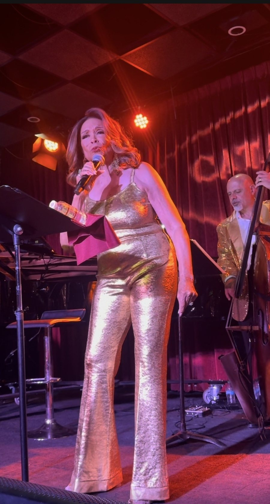
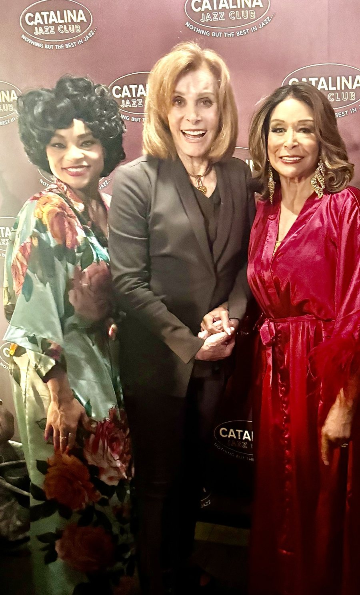
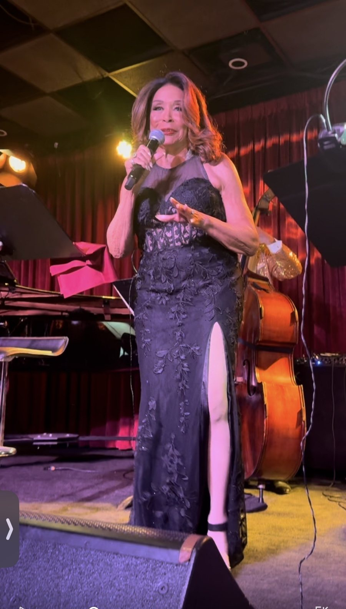
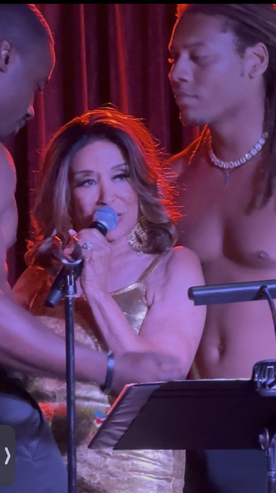
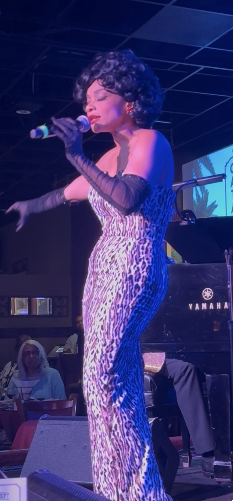
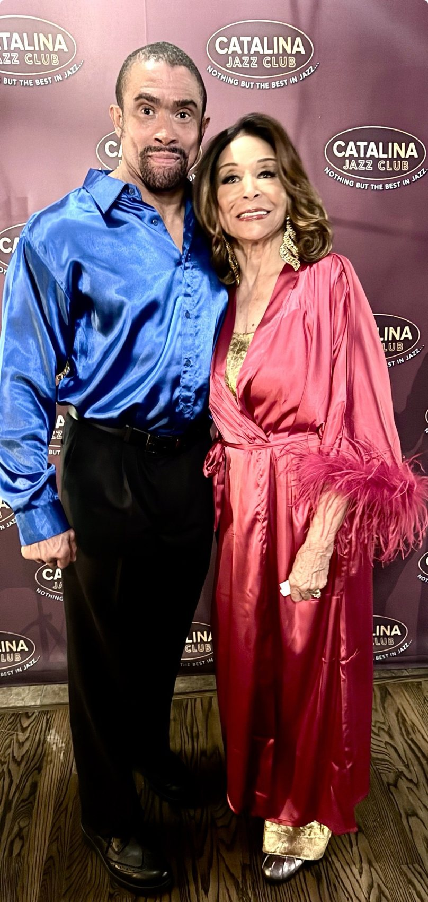

Freda Payne Stole VMAs Weekend
Every camera in town was pointed at the Peacock Theater. But the night Hollywood can't stop raving about happened on Sunset, where an 84-year-old legend in gold lamé delivered a sold-out, standing-ovation, once-in-a-lifetime triumph.
Forget the after-parties. The hottest ticket in Los Angeles on VMAs weekend did not come with a step-and-repeat. It came with a red velvet curtain, a jazz band dressed in gold, and Freda Payne.
The Detroit-born "Band of Gold" legend sold out Catalina Jazz Club on Saturday, September 26, with Freda Payne Portrays and Honors Legendary Ladies of Song. It was one week after her 84th birthday. She did not look it, she did not sing like it, and she did not slow down for a second.
Let's not bury the lede. This show was legendary. Standout. Stellar. Beyond outstanding. It was the kind of night people in this town will be bragging about having seen for years, and we were in the room.
The verdictA masterclass from a living legend. Freda Payne didn't just perform on Saturday night. She reigned.
Who was in the house
The star power in the room was off the charts. Stefanie Powers was there. Loretta Devine was there. And they were joined by a host of other celebrities, too many to name: screen stars, recording artists, producers, directors and Hollywood insiders, all packed into one sold-out room to see a legend at work.
On the biggest awards weekend of the fall, with every publicist in town working a carpet across the city, Hollywood picked a jazz club on Sunset. That says everything.

The finale: "Band of Gold"
And then she saved the best for last. Freda Payne closed the night with "Band of Gold," her own world-famous, chart-topping global hit, the song that made her an international star and has been played around the world ever since.
The room sang along. Then the room stood up. The standing ovation lasted three full minutes. Three minutes of a sold-out Hollywood crowd on its feet for a living legend. You do not see that every night, and you will not forget it once you have.
Two looks, zero misses
She opened in a gold lamé jumpsuit that caught every light in the room and every eye in the house. Then she came back in floor-length black lace with a thigh-high slit, as elegant as anything on a red carpet that weekend.


The moment
If you only hear about one number, make it "Fever." Peggy Lee's classic, sung in gold, two dancers at her side, red light pouring down the stage. She took her time with it. She let the bass walk. She owned every second of it. The room went wild. The applause came before the last note was finished, and it kept going long after it should have stopped. Simply sensational.
Nine legends, one star
The concept: Payne honored nine women who shaped American jazz and pop, many of whom she knew personally. Ella Fitzgerald, Sarah Vaughan, Dinah Washington, Lena Horne, Nancy Wilson, Peggy Lee, Gloria Lynne, Dakota Staton and Eartha Kitt.
She opened with Ella's "How High the Moon." She gave Sarah Vaughan "Body and Soul," Nancy Wilson "Guess Who I Saw Today," Gloria Lynne "I Wish You Love" and Dakota Staton "The Late Late Show." It was not a tribute act. It was a legend singing about the women she grew up watching, and you could hear every memory in it. The voice is still rich, still commanding, still pure Freda. Every song landed. Not one wasted moment.
Special guest: Thomasina Gross as Eartha Kitt

Special guest Thomasina Gross opened the evening as Eartha Kitt, in a leopard-print gown and black opera gloves, and set the mood beautifully. Her candlelit table scene, with two martinis and a gentleman caller, was a charming touch of old Hollywood.
It was the perfect warm-up for the main event. Because when Freda Payne walked out, the night belonged to her.
A family affair: Gregory Abbott Jr.
The night's host was Payne's son, Gregory Abbott Jr., and he was the perfect man for the job. Smooth, warm and quick, he kept the room laughing between numbers, and introduced the star of the night: his mother.
That introduction was a moment all by itself. A son calling his mother's name on Sunset Boulevard, and a sold-out house roaring for her. By the end of the night that same house was on its feet for three minutes straight. After the show the two of them posed together, him in electric-blue satin and her in a rose satin robe with feathered cuffs. Hollywood royalty, two generations deep.
Shout-out to Gregory Abbott Jr. He hosted like a pro, and the stage clearly runs in the family.

Take a bow, Donald B. Welch
A huge shout-out to the man who made it happen. Donald B. Welch, the playwright, director and producer behind the night, wrote and directed Legendary Ladies of Song and presented it under the Don B. Welch banner. The idea was his. So was the vision.
And what a vision. This was not a singer and a piano. It was a full production, with costume changes, scene work, actors and dancers, staged with the kind of care you usually only see in theater. Welch built a show around Freda Payne's memories of the women she grew up watching, gave her the room to shine, and filled every seat in the house.
A sold-out room on the busiest weekend of the fall is no accident. That is a producer who knows exactly what he is doing. Congratulations, Don. This one was a smash.
The band was gold, too
The musicians matched the star, dressed in gold: Josh Nelson on piano as musical director, Chris Colangelo on bass, Ricky Woodard on saxophone and Marcello Carelli on drums. Actors Terryl DaLuz and Kyrel Jaundoo filled out the stage.
What's next
Payne sets sail at the end of October with Holland America, performing on a cruise from Fort Lauderdale to Puerto Rico on a bill with Darlene Love and Wayne Newton.
As for Legendary Ladies of Song? It is built to tour. Producers, take note. Freda Payne is a national treasure, and on Saturday night she proved it all over again. If this show comes back around, buy the ticket the day it goes on sale. It sold out this time, and it will sell out faster next time.
All photographs by Terry Bryant, used with permission.